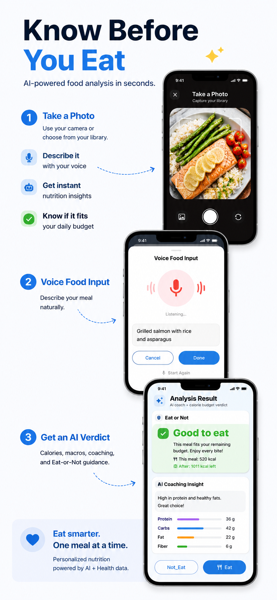
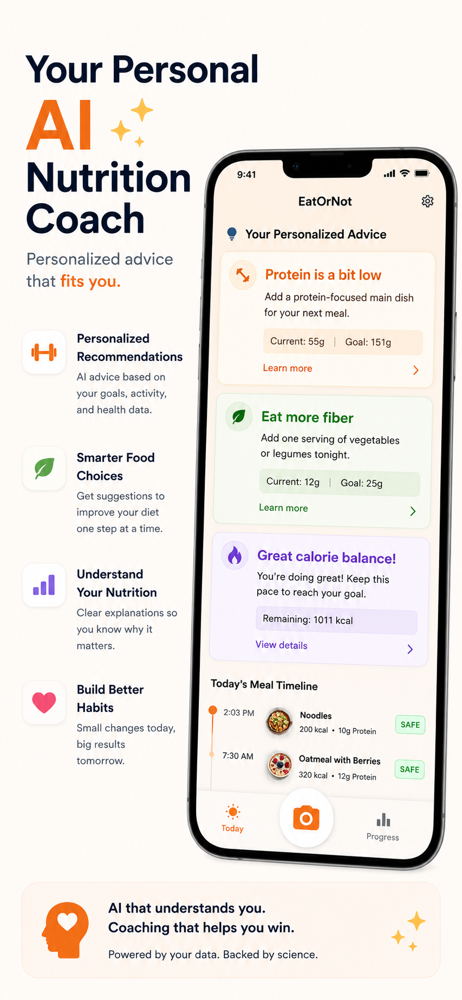
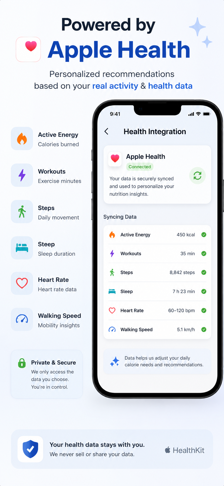
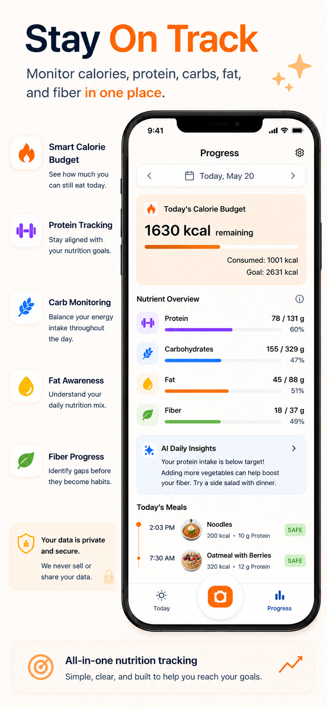
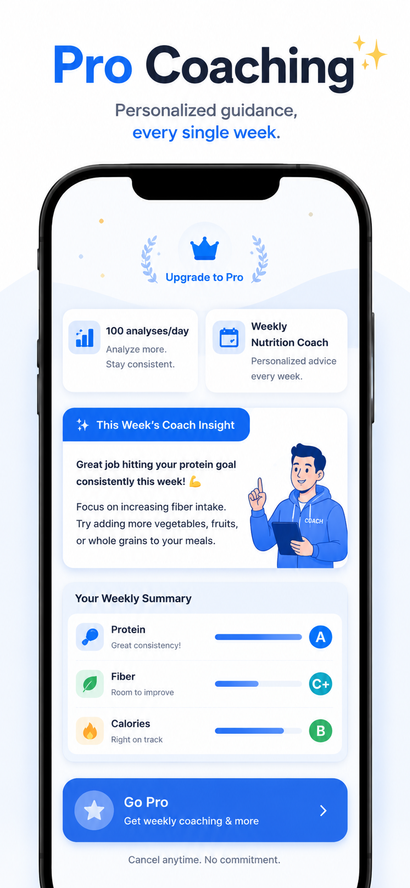
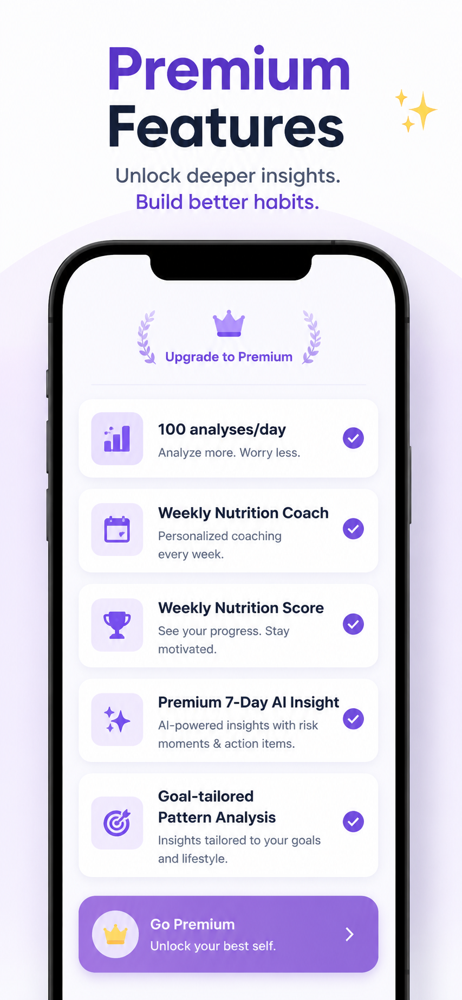

Capture the meal.
Use a photo, your voice, or a quick description instead of searching a food database.

Now on the App Store
Snap a meal or say what is on your plate. EatOrNot AI estimates calories and macros, checks your daily budget, and gives a simple eat-or-adjust recommendation.
Made for the moment before ordering, cooking, snacking, or logging a meal.
App Store preview
The app experience centers on fast meal input, clear nutrition verdicts, HealthKit-aware context, and practical daily coaching.

Use the camera, choose from your library, or describe food naturally to receive calories, macros, and an eat-or-not decision.

Recommendations highlight protein, fiber, calorie balance, and recent meals in plain language.

Health data is used only after authorization to personalize calorie needs and recommendations.

Track remaining budget, nutrient progress, meals, and AI daily insights without manual database searching.
What EatOrNot AI does
Estimate calories, protein, carbs, fat, fiber, and meal components from a food photo or text description.
See whether a meal fits your remaining budget based on goals, logged meals, and allowed health context.
Receive practical nutrition suggestions around protein, fiber, calories, meal timing, and habit patterns.
Analysis stays under your control. You choose when a meal should be saved to your daily timeline.
Free daily analysis supports casual use, while paid plans unlock higher AI analysis limits and deeper insights.
Pro and Premium coaching turn recent meals into summaries, scores, risks, and action items.
Plans
Paid tiers focus on higher analysis limits and weekly nutrition coaching, while the core meal decision flow stays simple.

Designed for users who want consistent AI meal analysis and personalized guidance every week.

Premium adds weekly nutrition score, risk moments, goal-tailored pattern analysis, and action items.
Comparison
| Feature | Free | Pro | Premium |
|---|---|---|---|
| AI meal analyses | 3 / day | 100 / day | 100 / day |
| Photo and voice food input | Included | Included | Included |
| Eat-or-adjust recommendation | Included | Included | Included |
| Apple Health context | Included | Included | Included |
| Weekly Nutrition Coach | Locked | Included | Included |
| Weekly Nutrition Score | Locked | Locked | Included |
| Premium 7-Day AI Insight | Locked | Locked | Included |
Privacy and support
EatOrNot AI requests health permissions only to calculate budgets and personalize nutrition coaching. You stay in control of what is shared.